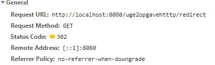

Hello World!
Answers for question 1-15
Monitoring HTTP Headers 1
There is the Status tab whihc give the current status of the response in this case OK.
Then there is time which indicates the time needed to load.
Monitoring HTTP Headers 2
The purpose of connection header is to control whether the connection stays open after transaction. If the value is “keep-alive” it will keep the connection open
Monitoring HTTP Headers 3

The status code 302 tell the client that the URI has been found and changed on the server side and instead of loading the redirect uri it should attempt to load the r.html uri.
You can see the location that the client should got to in the response header of the redirect.
link to question 3
link to question 3 through redirect
Redirecting to https instead of http
The first request is to studypoints HTTP which then get a 307 message back which redirect to the HTTPS version of the site.
The second is the call to the https version which is a success and gets code 200.
Status Codes (5xx)
500
Status Codes (4xx)
404
Status Codes - Ranges
200: Is the successful response range, this is where the server answers back with a success even if there isn’t content or just partial content.
300: These are the redirect codes, these can indicate where the new site is and whether or not it is permanent .
400:these are client side errors such as the classic 404 which is a request for a page that do not exist.
500: are server side errors. For instance the previous attempt to divide a 100 with 0 in the code
Get HTTP Request Headers on the Server
Get/Post-parameters
When I use the form with the “get” the address is extended by the information in the form. In this case: ?firstName=First+Name&lastName=Last+Name&hidden=12345678#.
When I use the form with then “post” the address is extended only with the attribute of the form in this case: #
The first case is send as a query string parameter and the second in form data. While this appears different in the browser, the actual information send is the same

.PNG)
Sessions (Session Cookies)
The server maintains a “state” by utilizing cookies. When a request is send the server can send back the data for a cookie, in the form of set-cookie.
The browser than create this cookie and the next time it contacts the server it will send the cookie as well.
Then the server know what info to utilize and can also change the information within the cookie or delete it. Or simply create more cookies.
Im sorry but I don't know what images to add to this.
link to the sessionDemo Servlet
Persistent Cookies
Persistent cookies assist us in maintaining state due to the fact that their life span can be as however long or short the creator wishes it to be.
Also it does not seize to exist when the browser is terminated.
This allows us for instance to track data of the user over longer periods of time and many visits as the Cookie would always be the same whereas the session cookie would be a new one every time they close their browser
link to the cookieDemo Servlet
Answers to Nginx and Certificate
Link to ca 1